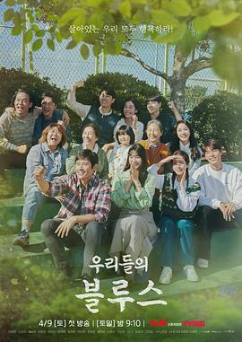

8.8
我们的蓝调
Our Blues
2022
韩国
评分 8.8
导演:
金奎泰
演员:
李炳宪 / 申敏儿 / 车胜元 / 金宇彬 / 韩志旼 / 李姃垠 / 严正化
类型:
剧情
剧情简介
在韩国济州岛这个风景如画却人情复杂的地方，多个命运相互交错。货车司机李东锡（李炳宪 饰）出生在这里，他的脚步遍布岛上道路、港口与夜市，他的笑容温暖却隐藏着过去的痛楚。单亲妈妈闵善 娥（申敏儿 饰）带着孩子来到岛上，她想重启人生，却无意间卷入东锡的世界。冰冷的海风中，渔市老板郑恩熙（李姃垠 饰）打理着母亲留下的鱼摊，她笑声爽朗，却在内心深处守着一个谁也不知的伤口。剧集采用单元格式，让每个人物在不同篇章中闪现：一个潜水海女韩志旼 饰演的李英玉怀揣梦想回到家乡；金宇彬 饰演的朴正俊则是刚从城市回归、带着城市光鲜却在找寻真正归属感的船长。他们或相遇、或错过，却都在这片海岛上为“为什么活着”而探寻。剧情没有夸张的爆炸或惊天阴谋，而是在晨雾中渔船缓缓驶出、在夜色中集市灯火亮起、在岩石海岸拍岸声中人物默默对话。友情、爱情、亲情在不起眼的小事里显现：海女出海归来化身黑咖啡摊老板、曾经的初恋被多年之后再遇、身带障碍的双胞胎姐妹彼此依偎又彼此别离。影片通过这些“人生站点”告诉我们，即使身处人生的起跑线、巅峰或终点，每个瞬间都值得珍惜。阳光透过海雾，渔网在码头晃动，少年在街头自问：“我要的生活是什么？”老人在海边凝视远方，像是在回忆也像在等待。孤独与希望并存，淡淡的伤感中透着温暖。